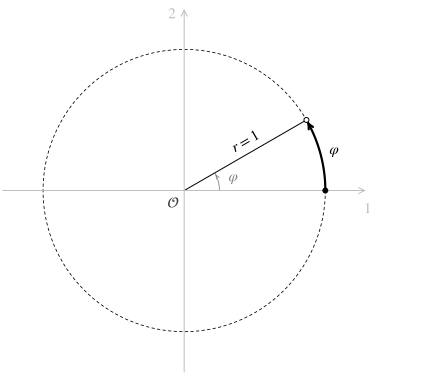

2.1 Der Einheitskreis#
Wir definieren zunächst, was ein Winkel ist. Dazu zeichnen wir zwei orthogonale Koordinatenachsen auf Papier (Abb. 2.1). Die Richtungen dieser Achsen bilden eine Basis der Papierfläche. Das heißt, wir können jeden Punkt der Papierfläche erreichen, indem wir ein Stück weit in die Richtung der einen Achse gehen und ein Stück weit in die Richtung der anderen Achse. Mehr Richtungen brauchen wir nicht, und weniger Richtungen reichen nicht aus. (Die Stücke, die wir in eine Richtung gehen, können auch Null oder negativ sein. Null heißt, wir gehen gar nicht in die Richtung, und negativ heißt, wir gehen in die genau entgegengesetzte Richtung.) Die Richtungen, in die die beiden Achsen zeigen, werden oft mit \(x\) und \(y\) bezeichnet, oder auch mit \(x_1\) und \(x_2\). Für uns ist aber hier nur wichtig, dass die eine Achse in die eine Richtung zeigt und die andere Achse in die andere. Wir nennen die Achsen daher einfach \(1\) und \(2\) und schreiben diese Namen an die Enden der beiden Achsen. Wir können die Achsen dann „die 1-Achse“ und „die 2-Achse“ nennen. Oder, wenn wir ganz auf Achsenbenennungen wie \(1\), \(2\), \(x\), \(y\) usw. verzichten wollen, dann sagen wir dazu einfach „Rechtsachse“ und „Hochachse“. Das ist immer eindeutig, und man muss sich keine Buchstaben merken. Was wir erhalten haben, nennt man ein kartesisches Koordinatensystem der Ebene. In einem kartesischen Koordinatensystem stehen die Koordinatenachsen senkrecht aufeinander. Der Schnittpunkt der beiden Achsen wird der Ursprung des Koordinatensystems genannt, wir bezeichnen ihn hier mit dem Buchstaben \(\mathcal{O}\) (englisch „Origin“ für „Ursprung“).
Wir zeichnen nun um den Ursprung \(\mathcal{O}\) einen Kreis mit Radius \(r=1\). Er schneidet die \(1\)-Achse im Punkt \((1|0)\). Dieser Punkt ist in Abb. 2.1 markiert. Die beiden Zahlen in der Klammer geben die Koordinaten dieses Punkts an. Die „\(1\)“ ist seine Koordinate in der \(1\)-Richtung („nach rechts“) und die „\(0\)“ seine Koordinate in die \(2\)-Richtung („nach oben“). Das heißt, um zu diesem Punkt zu gelangen, müssen wir vom Ursprung \(\mathcal{O}\) aus \(1\) Stück in Richtung der \(1\)-Achse gehen („\(1\) nach rechts“) und \(0\) Stücke in Richtung der \(2\)-Achse („\(0\) nach oben“). Weil wir zuerst in Richtung \(1\) gehen, steht die „\(1\)“ in der runden Klammer an der ersten Stelle. Erst danach gehen wir in Richtung \(2\), deswegen steht die „\(0\)“ in der Klammer an zweiter Stelle. Mit diesen zwei Koordinaten können alle Punkte der Ebene eindeutig beschrieben werden, zum Beispiel auch die weiteren Schnittpunkte des Einheitskreises mit den Achsen. Er schneidet die \(1\)-Achse ein weiteres Mal im Punkt \((-1|0)\) („\(1\) nach links(!) und \(0\) nach oben“), und er schneidet die \(2\)-Achse in den Punkten \((0|1)\) („\(0\) nach rechts und \(1\) nach oben“) und \((0|-1)\) („\(0\) nach rechts und \(1\) nach unten(!)“). Die Koordinaten des Ursprungs sind \(0\) und \(0\). Wenn ein Punkt einen Namen hat, dann schreibt man seine Koordinaten oft gemeinsam mit seinem Namen auf. Etwa der Ursprung hat einen Namen („\(\mathcal{O}\)“), und man schreibt: \(\mathcal{O}\,(0|0)\).


Abb. 2.1: Der Winkel \(\varphi\) ist die Länge des Kreisbogens im Einheitskreis (Quelle: eigene Darstellung; Lizenz: CC BY-SA 4.0)#
Kommen wir nun zur Definition eines Winkels. Wir zeichnen einen Radius \(r\) des Kreises ein, also eine Linie, die den Ursprung mit einem Punkt auf dem Kreis verbindet. Es gibt unendlich viele solcher Radiuslinien, eine davon ist in Abb. 2.1 eingezeichnet. Sie hat die Länge \(r=1\), denn der Kreis ist ein Einheitskreis. Der Schnittpunkt der Radiuslinie mit dem Einheitskreis ist in der Abbildung mit einem Kringel markiert. Diese Radiuslinie zeigt nicht in Richtung der \(1\)-Achse (und auch nicht in Richtung der \(2\)-Achse). Wir sagen: sie bildet einen Winkel mit der 1-Achse. (Die Linie bildet auch mit der \(2\)-Achse einen Winkel, aber wir betrachten hier zunächst nur den Winkel mit der \(1\)-Achse.) Um die Größe des Winkels zur \(1\)-Achse zu bestimmen, erinnern wir uns an den Schnittpunkt der \(1\)-Achse mit dem Einheitskreis. Das ist in Abb. 2.1 der schwarze Punkt auf der \(1\)-Achse und dem Einheitskreis. Der Winkel \(\varphi\) ist nun definiert als die Länge des Kreisbogens zwischen diesen Punkten auf dem Einheitskreis, gemessen, von der \(1\)-Achse ausgehend, entgegen dem Uhrzeigersinn. (Die Drehrichtung entgegen dem Uhrzeigersinn wird die mathematisch positive Drehrichtung genannt.) Das heißt, man geht von dem einen Punkt auf dem Kreisbogen entgegen dem Uhrzeigersinn in Richtung des anderen Punkts los, und misst die Entfernung bis zum anderen Punkt. Das Ergebnis ist der Wert des Winkels.
Wenn man den Winkel zwischen zwei Linien angeben will, macht man sich in der Regel nicht die Mühe, den Einheitskreis zu zeichnen und den Kreisbogen zwischen den Schnittpunkten der beiden Linien mit dem Einheitskreis einzuzeichnen. Stattdessen deutet man diesen Kreisbogen nur an, indem man an der Schnittstelle der beiden Linien einen kleinen Kreisbogen einzeichnet, und den Namen des Winkels in das entstandene kleine Kreissegment hinschreibt. So haben wir das in Abb. 2.1, in hellgrau, auch gemacht. Zur Verdeutlichung des mathematischen Drehsinns kann man auch an diesen kleinen Kreisbogen einen Richtungspfeil machen. So wird deutlich, in welche Richtung der Winkel gezählt wird. Das muss man aber nicht machen, da der mathematisch positive Drehsinn eindeutig definiert ist.